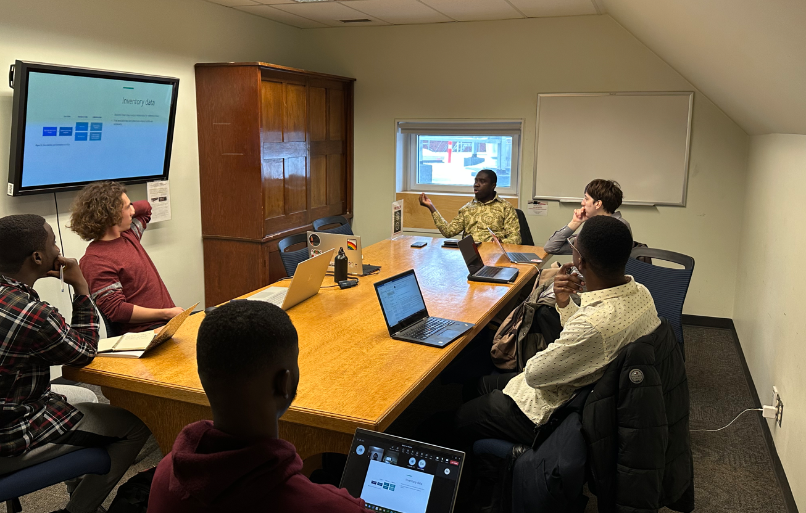

Graduate Student, Aubin Payen, leads the SFSE Research group in a 2-hour training session on social life cycle assessment.
July 23, 2019
On May 27, 2023, the SFSE lab engaged in a three-hour tutorial and training session on social life
cycle assessment and its implications. This tutorial session was led by Mr Aubin Payne, the lead researcher
in social life cycle assessment in the SASE research group.
Mr. Payne provided some background information on social life cycle assessment and the more recent
methodology released my UNEP in 2020. Although it is similar to environmental life cycle assessment,
some important differences exist.
Mr Payne shared that impacts are often tied to a company's operations rather than individual
products in conducting social life cycle assessment. Additionally, social life cycle assessment metrics
are more subjective, as there are questions of whether chosen metrics actually gauge the property that
the practitioner wants to measure.
Aside from the differences between these two assessment methods, the methodology used by these follows
a similar protocol where the practitioner (a) establishes a goal and scope, (b) inventory data,
(c) data translation, (d) interpretation and hotspot identification and (e) communication of results.
Unlike the environmental life cycle assessment, Mr. Payne shared that the indicators for data inventory
are defined by the stakeholders affected, as they cover workers, value chain actors, and the local community.
Beyond calculating the social impact, Mr. Payne shared that the results can be translated into human well-being (QALYs or DALYs).
However, some of the disadvantages of this approach to the impact quantified are the unsuitability
of data for comparison and the extent of extrapolation made during the assessment.
To demonstrate these, Mr Payne used a classic example of Plantain Chips and
selected impact categories such as minimum wage. He went further to walk the team through the scoring methods,
the aggregation and graphical reporting methods, the calculation method, and finally, the presentation of the data in a graph.
In the final hour of the training session,
Mr. Payne shared how the PSILCA database can assist practitioners in conducting social life cycle assessments.
It was an insightful tutorial session as it was the first time many of the students were getting into familiar
with the concepts and principles of social life cycle asssement.